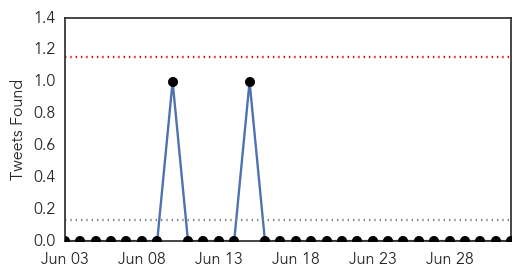
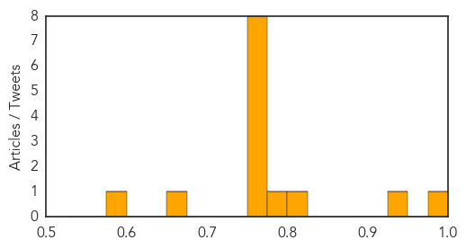
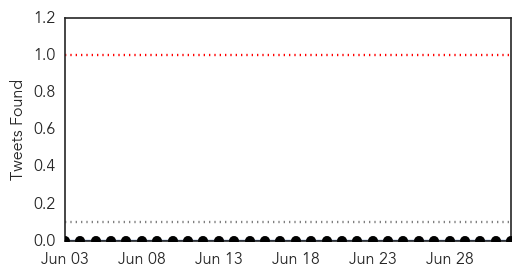

Influenza
30-Day Web Trend
0 alerts, 0 warnings

30-Day Twitter Trend
0 alerts, 0 warnings

Article Locations

Article Confidences
Top Articles:
- 0.981
- Controlling Avian Flu in West Africa: Nuclear-Derived Techniques Enable Early Detection of Outbreaks
- 0.935
- A Single Mutation Helped Last Year's Flu Virus Gain An Advantage Over The Vaccine
- 0.820
- Tennessee focuses on avian flu protection
- 0.781
- Narcolepsy link to pandemic flu vaccine becomes clearer
- 0.768
- Tennessee preps for avian flu - WRCBtv.com
- 0.751
- July 2, 2015 Archives
- 0.751
- July 1, 2015 Archives
- 0.751
- July 1, 2015 Archives
- 0.751
- July 1, 2015 Archives
- 0.751
- July 1, 2015 Archives
- 0.751
- July 1, 2015 Archives
- 0.751
- July 1, 2015 Archives
- 0.656
- Combating bird flu with science and a hunch
- 0.592
- A new strain of canine dog flu makes its way to Georgia
Top Tweets:
-
No tweets found for Jul 02, 2015
Swine Flu
30-Day Web Trend
1 alerts, 0 warnings

30-Day Twitter Trend
0 alerts, 0 warnings

Article Locations
Article Confidences
Top Articles:
- 0.972
- Stanford study: Immune response to a flu protein yields new insights into narcolepsy
- 0.972
- Patients of diabetes, hypertension to get swine flu shots
- 0.948
- Narcolepsy-Inducing Pandemrix Swine Flu Vaccine Link Better Understood: Study
- 0.940
- Trinidad and Tobago News, Blogs, Videos, Forums and More!
- 0.903
- Scientists find new evidence on GSK vaccine link to narcolepsy
Top Tweets:
-
No tweets found for Jul 02, 2015